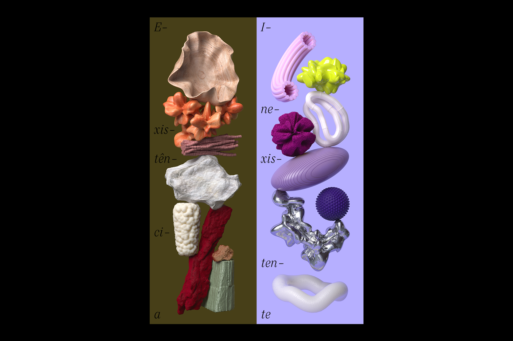
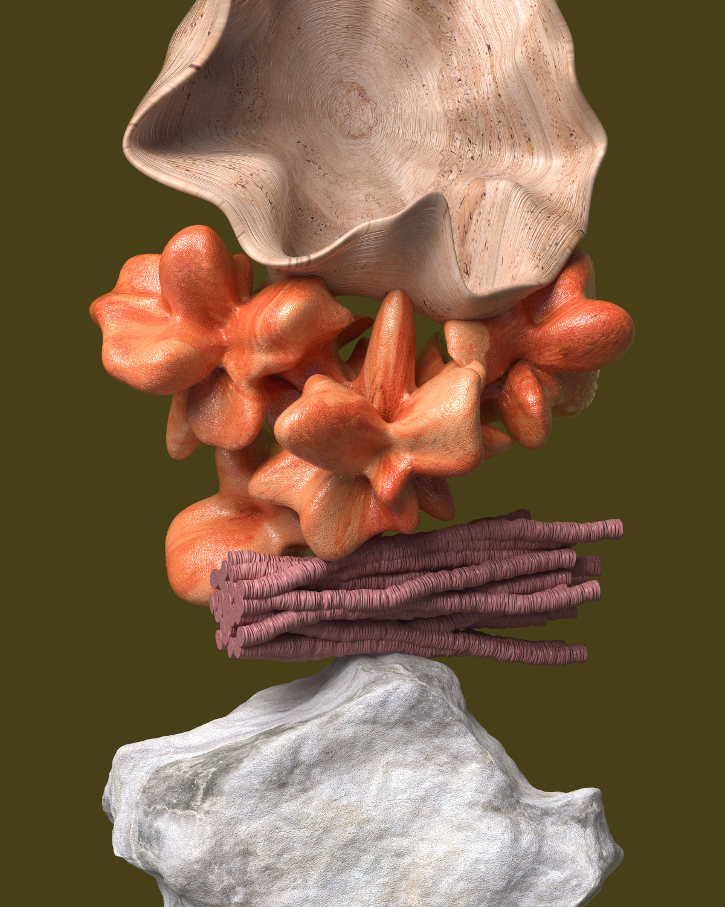
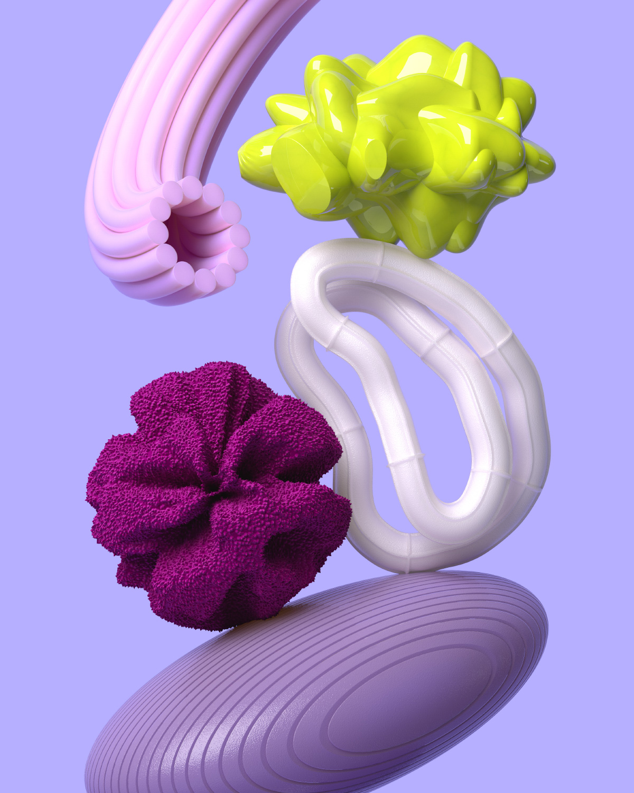

ADG Biennial
Every two years, ADG Brasil hosts an award show to feature the best graphic design work in the country from that period. To celebrate their 30th birthday, the association invited a group of 30 designers, artists and studios to develop a set of posters each, reflecting on the role of design today. The posters were exhibited in the Oscar Niemeyer Museum in Curitiba, along with the award show.
Through form and texture, the set of posters is inspired by the designer's process of transforming existing things into something that doesn't yet exist. It also reflects on the growing need to imagine and develop new materialities, and to look back at natural materials as a solution over synthetic ones.
- Client: ADG Brasil
- Year: 2019
- Creative Direction: Dandara Almeida, Vanessa Queiroz
- Art Direction and 3D: Pedro Veneziano